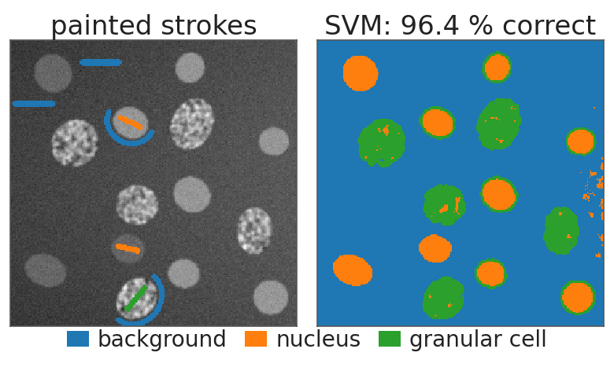
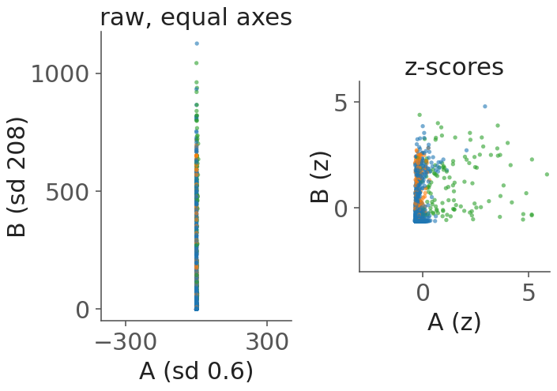
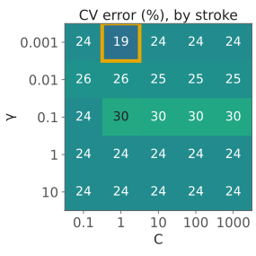
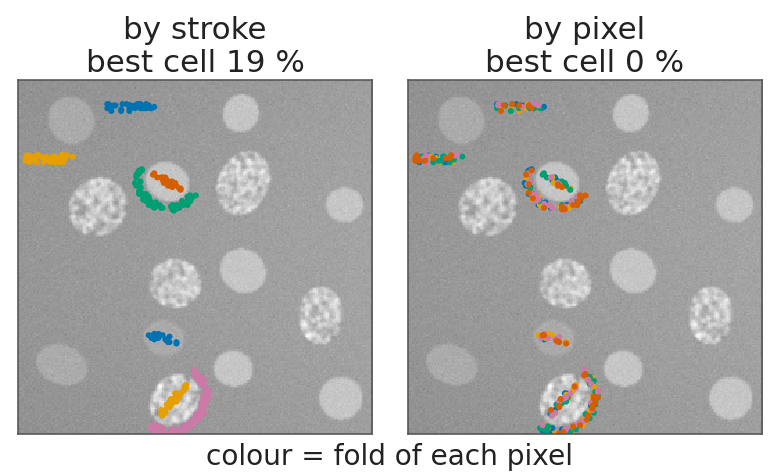
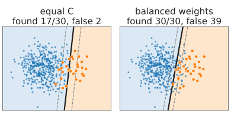
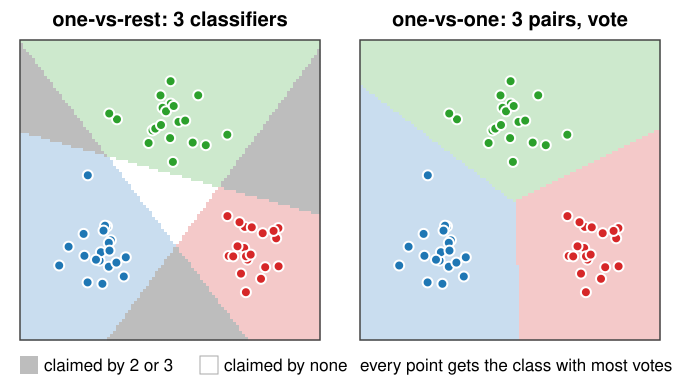
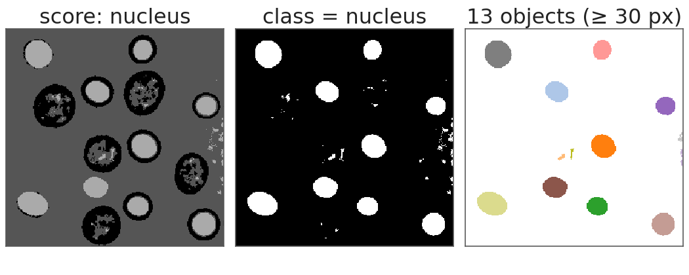

Back to images. The random forests day built the pixel classifier: paint strokes, compute a feature stack, train, correct. This unit puts an SVM into the same loop and covers what is specific to SVMs:
Standardise the features: essential for the RBF kernel function, irrelevant for a forest.
Choose (C, \gamma) by cross-validation, with folds by stroke.
Class imbalance: class weights, or moving the threshold on f.
More than two classes: one-vs-rest and one-vs-one.
When is an SVM the right choice?
Slides titled The math give the formulas and proofs; the ideas are complete without them.
Recall: paint, train, look, correct (the random forests day)
Paint a few strokes per class on the image.
Every pixel gets a feature vector from the feature stack: intensity, edges, blobs, ridges, texture, each at several scales \sigma (here 42 channels).
Train on the painted pixels, classify every pixel, look at the result and the uncertainty, paint where it is wrong.
Neighbouring pixels are near copies: evaluate on a held-out region, not on random painted pixels.
The SVM replaces the forest in this loop. Everything else stays.

The demo’s test image, full stack, SVM with its default settings.
Standardise the features
The RBF kernel function compares pixels by their distance\|\mathbf x - \mathbf z\| in feature space.
The channels of a stack have very different ranges: in the test image, one structure-tensor channel has a standard deviation of 0.6, another of 208.
The distance is then decided by the few channels with large numbers; the others are invisible (unit 1’s exercise B6: area in pixels vs intensity 0–1).
z-scores per channel: z_j = (x_j - \mu_j)/s_j, mean 0 and standard deviation 1 (the same z-score as on the measurements day).
Use the training pixels’ \mu_j, s_j, and apply the same numbers to every other pixel.
A forest does not care: a threshold on one channel is unaffected by its units. A linear SVM can absorb scales into \mathbf w, but its penalty \|\mathbf w\|^2 still depends on them.

Try it: an SVM in the pixel classifier
(C, \gamma) by cross-validation
The SVM has two settings that matter, and their best values depend on the data. Choose them by measurement:
A log grid: C \in \{0.1, 1, 10, 100, 1000\}, \gamma \in \{0.001, \dots, 10\}.
For each cell, k-fold cross-validation (the random forests day): train on k - 1 folds, count errors on the held-out fold.
Pick the best cell, train on all training data, and look at the test data once.
Small C and small \gamma: underfit. Large C and large \gamma: overfit. The best cell is in between, often along a diagonal band.

The demo’s test image, folds by stroke.
Folds by stroke, not by pixel
Painted pixels come in strokes: dozens of neighbouring, nearly identical pixels.
By pixel (random pixels in each fold): every held-out pixel has its neighbours in the training folds. The CV error is far too optimistic.
By stroke: whole strokes go into one fold. The held-out pixels are new in the sense that matters.
In the demo’s test image: by pixel, many cells show 0 % error; by stroke, the best cell has 19 %.
By-stroke CV needs several strokes per class: a class with one stroke is missing from training whenever its stroke is held out.

The math: no peeking
The standardisation statistics \mu_j, s_j are part of the model: compute them on the training folds only, inside each CV split. Computing them on all pixels lets the held-out data leak into training.
The same holds for any step that looks at the data: feature selection, balancing weights, the choice of (C, \gamma) itself.
After the grid search, the CV error of the best cell is optimistic too (it was the minimum of many noisy estimates): report the error on a test set that played no part in any choice.
Class imbalance
Background strokes are long and easy; nuclei are small.
With many more background pixels, every violation by a nucleus pixel is “cheap” compared with the total: the street shifts into the nucleus class.
Class weights: a separate penalty per class, C_+ \ne C_-. Balancing weights n/(k\,n_c) make each class count the same in total.
Or keep the SVM and move the threshold on f: classify as nucleus when f > \theta instead of f > 0.
Evaluate with the thresholding day’s tools: the confusion matrix, precision and recall. f plays the role of the intensity: sweeping \theta traces an ROC curve.

Synthetic: 400 against 30 points, linear SVM.
More than two classes

The SVM separates two classes. For K classes:
One-vs-rest: K SVMs, class k against all others; take the largest f_k. Regions claimed by several, or by none, are decided by comparing f values that were never calibrated against each other.
One-vs-one: K(K-1)/2 SVMs, one per pair; each votes, the class with most votes wins. More classifiers, but each on less data.
Probabilities: fit a sigmoid to f on held-out data (one line in practice).
The math: counting the work
K classes with n/K training points each. Training a kernel SVM costs roughly n^2 (the kernel matrix) or more.
One-vs-rest: K problems of size n: about K\,n^2.
One-vs-one: K(K-1)/2 problems of size 2n/K: about \frac{K(K-1)}{2}\cdot\frac{4n^2}{K^2} = \frac{2(K-1)}{K}n^2 < 2n^2.
So one-vs-one is cheaper to train for K \ge 3, although it has more classifiers. Prediction needs the kernel function between each pixel and the union of all support vectors, in both cases.
From pixels to objects
The decision value f (or the class probability) can serve as the data term of a graph cut (the graph cuts day): smooth the labelling with \lambda × boundary length, instead of thresholding each pixel on its own.
Then label the connected components and measure them, as with the forest.

Speckles of a few pixels become objects too: smooth first (a graph cut), or drop objects below a size.
SVM, forest, neighbours, networks
forest
SVM (RBF)
k-NN
network
feature scaling
not needed
essential
essential
helpful
settings
few, robust
C, \gamma: cross-validate
k
many
training
fast
convex, one optimum
none
non-convex
prediction cost
depth × trees
number of support vectors
all training points
layers
features
hand-made stack
hand-made stack
hand-made stack
learnt (the neural networks day)
An SVM is a good choice with few labels and tens to a few hundred hand-made features; on a pixel stack it is about as accurate as a forest, slower to predict, and needs more care. With many labels, networks that learn their own features win.
Summary
An SVM drops into the paint – train – correct loop of the random forests day.
Standardise every feature with training statistics: RBF distances are otherwise ruled by the channel with the largest numbers.
Choose (C, \gamma) on a log grid by cross-validation with folds by stroke; by-pixel folds are optimistic.
Imbalance: class weights C_+ \ne C_- or a moved threshold on f; evaluate with confusion matrices and ROC curves.
Multi-class: one-vs-rest (K SVMs, largest f) or one-vs-one (K(K-1)/2 SVMs, vote).